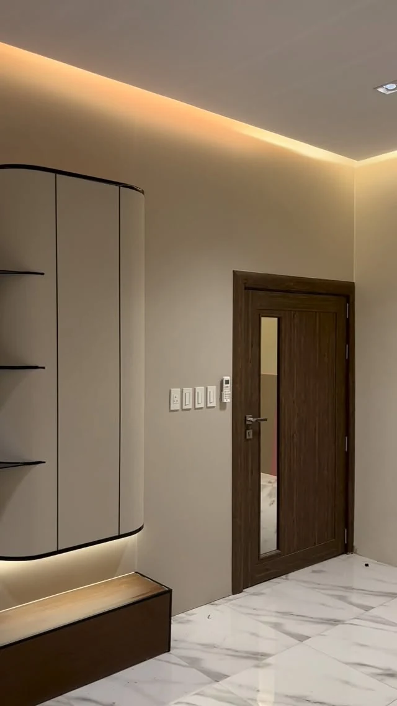

التصميم الداخلي
تصورات للمساحات السكنية والتجارية، مع توزيع الأثاث والخامات والإضاءة.
تصميم داخلي وخارجي وتنفيذ / الأحساء
تصميم داخلي وخارجي وأعمال تنفيذ في الأحساء. من التصور إلى تفاصيل الجدران والخامات، يُبنى المشروع حول استخدام المساحة.


الخدمات والتفاصيل
45 درجة للتصميم والتنفيذ في الأحساء. يتناول الحساب مشاريع داخلية وخارجية وأعمال ديكور. يفصل المعرض هنا بين التصورات التصميمية وصور التنفيذ لتتضح طبيعة كل عمل.
تصورات للمساحات السكنية والتجارية، مع توزيع الأثاث والخامات والإضاءة.
تصورات للواجهات والمساحات الخارجية وفق طبيعة المكان واحتياج المشروع.
أعمال ديكور وكسوات جدران وتفاصيل تنفيذية تُحدّد بعد مراجعة نطاق المشروع.
المعرض
نماذج مختارة من صور النشاط المنشورة. اختر التصنيف وافتح الصورة لمشاهدة التفاصيل.
6 صور في المعرض
بداية أوضح
جهّز هذه المعلومات لتبدأ المحادثة مع الفريق بصورة واضحة عن احتياجك.
قبل التواصل
لا؛ الصور المصنفة «تصورات تصميم» تعرض فكرة بصرية، والصور المصنفة «تنفيذ» توضح أعمالًا منشورة من الموقع.
نوع المشروع وموقعه ومساحته والمخطط إن توفر، مع تحديد احتياجك للتصميم أو التنفيذ أو كليهما.
اختر الخدمة وأضف التفاصيل التي تساعد الفريق على فهم طلبك. ستظهر لك رسالة جاهزة للمراجعة قبل فتح واتساب.